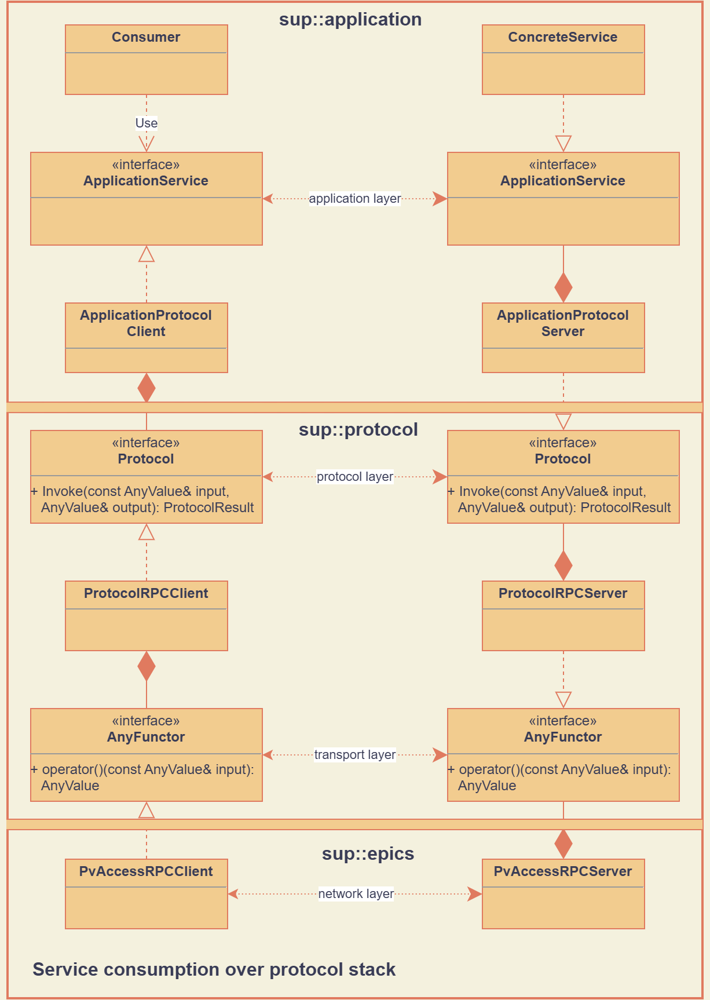

Protocol Stack
sup-protocol provides abstractions that allow application programmers to define and implement application specific interfaces that need to be exposed as a Remote Procedure Call (RPC) over the network. The implementation does not rely on any specific network protocol to avoid direct coupling between application level code and low-level network code.
Architecture
The following image summarizes the relationship between the main classes and interfaces involved in exposing an application specific interface as an RPC:
Application Layer
At the top of the diagram is the application specific code. This code defines an API in the ApplicationService interface that the programmer wishes to expose as an RPC. When the Consumer class interacts with this interface, it stays unaware of the concrete nature of the implementation. It can be a local implementation of this service (‘ConcreteService”), or a remote protocol adapter implemented via ApplicationProtocolClient class. The later forwards method calls so they can be handled by a server-side implementation.
To be able to expose the ApplicationService as an RPC, the application developers need to implement two concrete classes:
ApplicationProtocolClient: this class translates API calls from ApplicationService to the generic method Protocol::Invoke, defined as part of sup-protocol;
ApplicationProtocolServer: this class does the inverse. It implements the API of Protocol, i.e. mainly its Invoke method, and translates its payload to calls on an ApplicationService implementation.
The Protocol interface contains the following methods:
-
ProtocolResult Invoke(const AnyValue &input, AnyValue &output)
- Returns:
ProtocolResult indicating success or failure conditions.
The main API method that provides access to the application layer over the network.
-
ProtocolResult Service(const AnyValue &input, AnyValue &output)
- Returns:
ProtocolResult indicating success or failure conditions.
API method that can provide generic application protocol information to the caller.
Note
The input parameter for both API methods cannot be empty.
ProtocolResult is a simple wrapper around an unsigned integer value that describes success or a failure condition. User applications can extend the existing set with their application specific error conditions. User-defined error codes should start from the value GENERIC_APPLICATION_ERROR_START for generic application frameworks and from SPECIFIC_APPLICATION_ERROR_START for concrete applications.
The following basic ProtocolResult objects are defined in sup-protocol:
ProtocolResult |
Meaning |
|---|---|
Success |
Successful call |
NotConnected |
Error in the exchange of messages between client and server at the network layer |
ClientNetworkEncodingError |
Error when the network client cannot encode the transport packet into a network packet |
ServerNetworkEncodingError |
Error when the network server cannot encode the transport packet into a network packet |
ClientNetworkDecodingError |
Error when the network client cannot decode the network packet into a transport packet |
ServerNetworkDecodingError |
Error when the network server cannot decode the network packet into a transport packet |
ClientTransportEncodingError |
Error when the transport client cannot encode the Protocol input into a transport packet |
ServerTransportEncodingError |
Error when the transport server cannot encode the Protocol input or result/output into a transport packet |
ClientTransportDecodingError |
Error when the transport client cannot extract the Protocol output from the transport packet |
ServerTransportDecodingError |
Error when the transport server cannot extract the Protocol input from the transport packet |
ClientProtocolEncodingError |
Error when the Protocol client cannot encode its input into a protocol input |
ServerProtocolEncodingError |
Error when the Protocol server cannot encode the application data to the protocol ouput |
ClientProtocolDecodingError |
Error when the Protocol client cannot extract the application return value(s) from the protocol packet |
ServerProtocolDecodingError |
Error when the Protocol server cannot extract the application input from the protocol packet |
ServerUnsupportedPayloadEncodingError |
Error when the Protocol server cannot decode the payload from the transport packet |
InvalidRequestIdentifierError |
Error when the Protocol server receives a request about an asynchronous request with an unknown identifier |
InvalidAsynchronousOperationError |
Error when the Protocol server receives a request for an asynchronous request that is not valid |
ServerProtocolException |
Error when the Protocol at the server side throws an exception |
ClientTransportException |
Error when the injected transport AnyFunctor on the client side throws an exception |
AsynchronousProtocolTimeout |
Error when an asynchronous request times out |
Note
- Most predefined ProtocolResult objects can be categorized by:
Client or Server: indicates if the error occurred on the client or server side;
Network, Transport or Protocol: indicates if the error occurred at the network, transport or protocol layer;
Encoding or Decoding: indicates the direction of the data flow where an error occurred; more specifically, Encoding refers to the process of encoding data from a higher layer into a packet for the layer below, while Decoding referes to the inverse process.
Protocol and Transport Layer
The protocol and transport layer is defined by sup-protocol, as can be seen from the interface definitions in the diagram (Protocol and AnyFunctor) and the classes that translate between these two layers (ProtocolRPCClient and ProtocolRPCSserver).
Note
The split into a protocol and transport layer is not strictly necessary, but it allows for a more flexible design. The protocol layer is responsible for defining the structure of the messages exchanged between the client and server, while the transport layer is responsible for defining how these messages are exchanged over the network. This allows for supporting asynchronous communication over a synchronous network protocol.
The translation between the protocol and transport layer is done by the ProtocolRPCClient and ProtocolRPCServer classes. Multiple transport layer protocols are supported, depending on whether the transport layer is synchronous or asynchronous and whether the payload is encoded or not.
The choice of encoding and (a)synchronous communication is determined by the ProtocolRPCClient’s configuration. The server will respect the same transport layer protocol as requested by the client or return an error status if this is not supported.
Synchronous transport layer
If ProtocolRPCClient is configured to use synchronous communication over the transport layer, it will create a transport packet that is structured as follows:
# Without encoding
struct sup::protocolRequest/v2.1
query: <payload>
encoding: int32 0 (optional)
# With base64 encoding
struct sup::protocolRequest/v2.1
query: string <base64 encoded payload>
encoding: int32 1
where <payload> represents the input parameter of the Protocol::Invoke method. In case no encoding of the payload is used, the encoding field is optional and can be omitted. Currently, only two encoding methods are supported:
No encoding (0)
Base64 encoding (1): the input parameter of the Protocol::Invokde method will first be serialized into a binary format that is then base64 encoded into a string.
The ProtocolRPCServer object at the server side will unpack this packet to extract the original input parameter, possibly using base64 decoding. It will then call the custom Protocol::Invoke method of the application and create a return packet as follows:
# Without encoding
struct sup::protocolReply/v2.1
result: uint32 0
reply: <payload>
encoding: int32 0 (optional)
# With base64 encoding
struct sup::protocolReply/v2.1
result: uint32 0
reply: string <base64 encoded payload>
encoding: int32 1
where <payload> now refers to the output parameter of the Protocol::Invoke method. The result field encodes the return value of the Protocol::Invoke method.
Asynchronous transport layer
For simplicity, in this section all packets are shown without encoding. If base64 encoding would be used, this would add the member field encoding to the packet and both query and reply would be base64 encoded strings.
If ProtocolRPCClient is configured to use asynchronous communication over the transport layer, it will first send an initial request packet to the server that is encoded as follows:
struct sup::protocolRequest/v2.1
query: <payload or encoded payload>
async: uint32 0
If the server does not support the asynchronous transport protocol, it will ignore the async field and process the request as a synchronous request. If the server does support the asynchronous transport protocol, it will process the request and return a packet that is structured as follows:
struct sup::protocolReply/v2.1
result: uint32 0
reply: struct
id: uint64 <request_id>
async: uint32 0
where <request_id> is a unique integer identifier for the request.
The client will then poll the server to check if the request has been processed. The polling packets are structured as follows:
# Poll request
struct sup::protocolRequest/v2.1
query: struct
id: uint64 <request_id>
async: uint32 1
# Poll reply
struct sup::protocolReply/v2.1
result: uint32 0
reply: struct
ready: bool <true/false>
async: uint32 1
If the poll reply indicates that the initial request has been fully processed, the client will attempt to retrieve the result of this processing by sending a request packet that is structured as follows:
struct sup::protocolRequest/v2.1
query: struct
id: uint64 <request_id>
async: uint32 2
And the server will return the result of the processing in a packet that is structured as follows:
struct sup::protocolReply/v2.1
result: uint32 0
reply: <payload>
async: uint32 2
Network Layer
At the bottom part of the diagram is the network implementation (the diagram uses a concrete EPICS implementation). Every concrete network implemenation should implement the AnyFunctor interface:
-
AnyValue operator()(const AnyValue &input)
The function call operator with an AnyValue parameter and return value.
An implementation of the network layer requires:
The client and server implementations obey the contract of the transport layer. This means that the return values of the function call operator are compliant with the above mentioned reply structures.